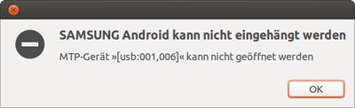

MTP
Dieser Artikel wurde für die folgenden Ubuntu-Versionen getestet:
Ubuntu 16.04 Xenial Xerus
Ubuntu 14.04 Trusty Tahr
Ausbaufähige Anleitung
Dieser Anleitung fehlen noch einige Informationen. Wenn Du etwas verbessern kannst, dann editiere den Beitrag, um die Qualität des Wikis noch weiter zu verbessern.
Anmerkung: Die Möglichkeiten der mtp-tools können noch detaillierter beschrieben werden.
Zum Verständnis dieses Artikels sind folgende Seiten hilfreich:
MTP (engl. Media Transfer Protocol) ist ein Protokoll, das u.a. zur Datenübertragung zwischen einem Smartphone oder Tablet (und auch einigen Digitalkameras) und dem eigenen Rechner genutzt werden kann. Bei neueren Android-Systemen (4.1+) ist es eine Möglichkeit des Datenaustauschs mit dem internen Speicher - wenn man es via USB-Kabel verbindet. Vorteile gegenüber dem früher üblichen Massenspeicher-Modus sind, dass Rechner und Gerät gleichzeitig auf die Dateien zugreifen können und dass Dateisystem-Inkonstistenzen auf dem Mobilgerät nicht auftreten, auch wenn man das Gerät spontan vom Kabel abzieht. Unter Ubuntu ist mitunter aber noch etwas Handarbeit nötig, um eine MTP-Verbindung einzurichten.
Manche Smartphones und Tablets lassen sich auch wie ein normaler USB-Massenspeicher einbinden (bei Android bis 4.0). Die Möglichkeit hierzu ist üblicherweise in den entsprechenden Einstellungsmenüs des Geräts zu finden. In diesen Fällen wird MTP nicht benötigt. Bei manchen Geräten kann dann allerdings nur auf nachgerüstete Speicherkarten (microSD), aber nicht auf den internen Speicher zugegriffen werden.
Installation¶
Die meisten Geräte sollten mithilfe des folgenden Paketes aus den offiziellen Paketquellen automatisch erkannt werden [1]:
mtpfs (universe)
 mit apturl
mit apturl
Paketliste zum Kopieren:
sudo apt-get install mtpfs
sudo aptitude install mtpfs
Um die Änderung anzuwenden, muss das Gerät erneut mit dem Rechner verbunden werden.
Hinweis:
Im Gerät muss natürlich der MTP-Modus aktiviert sein, um eine Verbindung über dieses Protokoll aufzubauen.
mtp-tools¶
mtp-tools bietet eine Sammlung von Kommandozeilenbefehlen, mit denen Geräte erkannt, Informationen über die Verbindung gesammelt und die MTP-Verbindung genutzt werden kann. Installiert wird es ebenfalls aus den offiziellen Paketquellen:
mtp-tools (universe)
mit apturl
Paketliste zum Kopieren:
sudo apt-get install mtp-tools
sudo aptitude install mtp-tools
Problembehebung¶
udev-Regel¶
Sollte das Gerät trotzdem noch nicht erkannt werden, kann man eine zusätzliche udev-Regel anlegen. Nachdem das Gerät angeschlossen worden ist, gibt man im Terminal [2] folgenden Befehl (aus mtp-tools) ein, um die nötigen Informationen zu sammeln:
sudo mtp-detect
Die Ausgabe sollte ungefähr so beginnen:
Listing raw device(s) Device 0 VID=1234 and PID=5678) is UNKNOWN. Please report this VID/PID and the device model to the libmtp development team
Wichtig sind hierbei Vendor ID (VID) und Product ID (PID). Nun öffnet man mit Root-Rechten [3] die Datei /etc/udev/rules.d/69-libmtp.rules. Sollte die Datei noch nicht existieren, kopiert man sie sich von /lib/udev/rules.d/69-libmtp.rules. Man fügt folgende Zeile mit angepasster VID und PID ein:
ATTR{idVendor}=="1234", ATTR{idProduct}=="5678", SYMLINK+="libmtp-%k", MODE="660", GROUP="disk", ENV{ID_MTP_DEVICE}="1", ENV{ID_MEDIA_PLAYER}="1"Nachdem das Gerät getrennt und erneut angeschlossen worden ist, sollte es erkannt werden. In Einzelfällen muss das udev-System neu gestartet werden, damit die udev-Regeln neu geladen werden:
sudo reload udev
Änderungsdatum wird beim Verschieben neu gesetzt¶
Beim Verschieben von Dateien vom Smartphone mittels z.B. Nautilus wird das Änderungsdatum der Dateien auf den aktuellen Zeitstempel gesetzt. Dies kann bei Bilddateien mittels Programmen wie z.B. gThumb behoben werden, indem "Werkzeuge/Datum ändern... → Letztes Änderungsdatum" auf "Zeitpunkt der Aufnahme" gestellt wird.
Es existiert ein Python-Skript [6], mit dem aus den exif-Informationen der Originaländerungszeitpunkt gesetzt werden kann. Dazu muss folgendes Paket installiert werden:
python-exif
mit apturl
Paketliste zum Kopieren:
sudo apt-get install python-exif
sudo aptitude install python-exif
In Nautilus werden keine Inhalte angezeigt¶
Nach dem Einhängen eines Fairphone 1 wurde in Nautilus nur ein leerer Ordner angezeigt. Abhilfe schafft das Aushängen, den Bildschirm des Smartphones zu entsperren und dann neu einzuhängen.
Nutzung mit Xfce/LXDE¶
Mit den Dateimanagern Thunar und PCManFM funktioniert der Zugriff auf ein angeschlossenes Gerät über mtp://[usb:00X,00Y]/, wobei X und Y für den jeweiligen Anschluss steht. Bei der Ermittlung der benötigten Werte für X und Y hilft der Befehl lsusb weiter. Beispielausgabe:
Bus 001 Device 004: ID 04e8:6860 Samsung Electronics Co., Ltd GT-I9100 Phone [Galaxy S II], GT-I9300 Phone [Galaxy S III], GT-P7500 [Galaxy Tab 10.1] Bus 001 Device 001: ID 1d6b:0002 Linux Foundation 2.0 root hub Bus 004 Device 001: ID 1d6b:0001 Linux Foundation 1.1 root hub Bus 003 Device 001: ID 1d6b:0001 Linux Foundation 1.1 root hub Bus 002 Device 001: ID 1d6b:0001 Linux Foundation 1.1 root hub
Die gesuchten Werte lauten also X=1 und Y=4.
Hinweis:
Mit dem Dateimanager PCManFM können Video-Dateien im *.mp4–Format mit VLC nicht wiedergegeben werden. VLC kann die Medienadresse 'mtp://[usb:00X,00Y] ...' nicht öffnen.
Getestet mit einem Smartphone mit Android-Systemen (4.1+) via USB-Kabel.
Kopieren von MTP- zu MTP-Gerät schlägt fehl¶
Das direkte Kopieren von Dateien von einem auf ein anderes MTP-Gerät schlägt in der Regel mit einer Fehlermeldung wie
"Fehler beim Kopieren von..."
fehl, da dieses nicht unterstützt wird. Von daher muss man als Zwischenschritt die Dateien vom Quellgerät auf einen internen lokalen Datenträger kopieren und von dort dann wieder auf das Zielgerät.
jmtpfs¶
 Bei einigen Mobilgeräten, wie etwa dem "Samsung Galaxy S3", wird zwar das Gerät durch mtpfs erkannt, man bekommt jedoch keinen Zugang.
jmtpfs ist ein auf FUSE und libmtp basierendes Dateisystem für den Zugang zu den MTP-Geräten. Es war explizit für den Dateiaustausch zwischen Linux- (und macOS-) Systemen und neuen Android-Geräten entwickelt, die das MTP unterstützen, aber nicht mehr USB Mass Storage.
Installation¶
jmtpfs (universe)
mit apturl
Paketliste zum Kopieren:
sudo apt-get install jmtpfs
sudo aptitude install jmtpfs
Benutzung¶
Das Gerät mit dem Rechner verbinden und den Bildschirm entsperren.
Wenn das Paket mtpfs installiert ist und das Gerät automatisch erkannt wird, muss das MTP-Dateisystem ausgehängt werden (im Dateimanager:
 Mausklick - "Dateisystem aushängen").
Mausklick - "Dateisystem aushängen").Einen Einhängepunkt ("mount point") im Home-Verzeichnis anlegen
mkdir ~/android
Das Android-Gerät anhängen
jmtpfs ~/android
Es wird das erste verfügbare MTP-Gerät eingehängt.
Der Befehl
fusermount -u ~/android
hängt das Verzeichnis aus, in dem das MTP-Android-Gerät eingebunden ist. Man soll darauf achten, dass vorher alle Dateioperationen erfolgreich beendet wurden, sonst droht Datenverlust. Im Gegensatz zum "mass storage"-Modus braucht man jedoch kein inkonsistentes Dateiystem zu befürchten, da alle Zugriffe auf Datei- und nicht Sektor-Ebene durchgeführt werden.
AudioPlayer, die direkt via MTP auf Mobilgeräte zugreifen können¶
| Player via USB | ||
| Name | Derivat | Netzmanager |
 AudioPlayer AudioPlayer | Lubuntu | Thunar |
| Rhythmbox | Ubuntu | Nautilus |
Links¶
MTP
 - Arch-Wiki
- Arch-Wiki Upgrade To Gvfs With MTP Support In Ubuntu 12.10 Or 12.04 To Easily Connect Android 4.0+ Devices
- Blogbeitrag, 01/2013Geräte mit Android 3.0 oder 4.0 via MTP in Ubuntu Linux einbinden
 - Blogeintrag, 12/2011
- Blogeintrag, 12/2011MTP mit Ubuntu Touch - Ubuntu Phone für MTP einrichten (bei Ubuntu 12.04 nötig)
- Erstellt mit Inyoka
-
 2004 – 2017 ubuntuusers.de • Einige Rechte vorbehalten
2004 – 2017 ubuntuusers.de • Einige Rechte vorbehalten
Lizenz • Kontakt • Datenschutz • Impressum • Serverstatus -
Serverhousing gespendet von